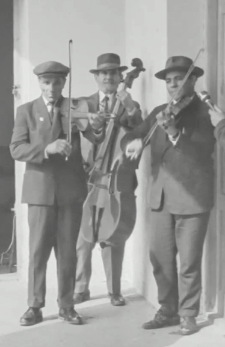
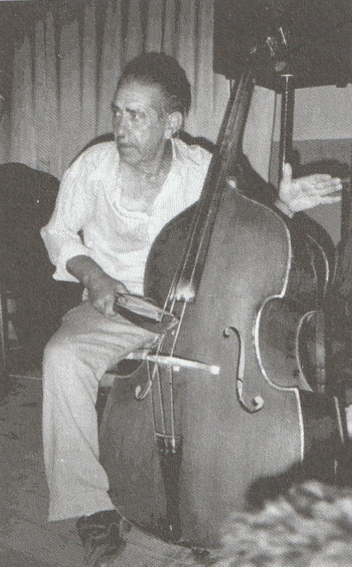
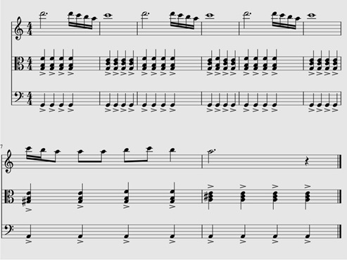

A második világháború után a nagybőgő szinte teljesen átveszi a kisbőgő szerepét a néphagyományban. Egy- két területen ugyan még jobban kedvelték utóbbit, vagy együtt élt a kettő, de a dialektusok nagy részén már csak előbbi volt megtalálható. A méretbeli növekedéssel nagyobb hangerő járt, ami igencsak fontos a hagyományos tánczene kíséretéhez. Ez nagy előnyt jelentett a kisebb testű, ezáltal halkabb kisbőgőkkel szemben. Olyan esetben, amikor egy zenésznek mindkét fajtából volt, a zenélés alkalmához, körülményeihez igazítva választottak, melyiket érdemesebb használni. Ha menetekben, vagy kisebb tánctérben kellett muzsikálniuk, akkor utóbbit, ha pedig nagyobb tánctérben, vagy olyan körülmények között, ahol nagyobb hangra volt szükség előbbit választották.
Az új hangszerrel új játéktechnika is érkezett. Sok helyen a házi készítésű rövidebb vonókat is elhagyták és áttértek a klasszikus zenében is használt német kápás vonóra, vagy ahhoz hasonló otthon gyártott utánzatokra. A megnövekedett vonóhossz új lehetőségeket nyitott. Megjelentek a bőgőn olyan vonások, melyek eddig csak a kontrán, például a folyamatos lassú-, vagy szaggatott gyorsdűvő. Az új vonók azonban nem voltak olyan súlyosak, mint a jóval tömörebb rövidvonók, hiába nyomták rá jobban a húrra. Voltak olyan házi megoldások, melyek kiküszöbölték ezt a problémát, jól lehet, nem feltétlenül azért készültek ezek az utánzatok, hogy kijavítsák a gyári vonó hiányosságait, mind inkább költséghatékonyság okán. Ilyen volt például a csávási bőgős, Csányi Mátyás vonója, ami első ránézésre olyan volt, mint egy rövidebb németkápás vonó, csak vastagabb, egyenes pálcával. Ehhez mérten jóval nehezebb is volt, mint klasszikus mása, de formájában azt volt hivatott utánozni. Hasonló otthoni utánzatokat az egész nyelvterületen találhatunk. Ezek többsége mind súlyosabb, kisebb vagy nagyobb mértékben rövidebb és kevésbé rugalmas a mintához képest. Erdély bizonyos területein megmaradt a kisbőgőn használt rövidvonó, melyet immáron a nagyobb hangszeren használtak. A jobbkéz játéktechnikája ezen területeken nem sokat változott, változhatott, hisz a vonó mérete behatárolta az eszköztárat, amit alkalmazni tudtak. Gyakorta a hosszú vonó esetén is ugyanazzal a technikákkal éltek, mint a rövid esetén, ám nyilvánvaló torzulások sok esetben megfigyelhetők. Ilyen például a hangsúlyok dinamikájának csökkenése.
Ahhoz hogy megértsük, hogyan hatottak a kisebb méretű basszushangszerek a nagybőgő játékstílusára érdemes olyan területet vizsgálat alá vetni, ahol aktívan élt valamennyi vonós basszushangszer egymás mellett azonos funkcióban. Ehhez ismételten Kalotaszegen kell szét néznünk, hisz ott párhuzamosan használtak csellót, kisbőgőt és nagybőgőt még a gyűjtések idején. Mivel más területen, mint például széken a nagybőgő ritkaságnak számított és jelentős különbség nem volt a méretek alapján a játékmódokban (ugyanúgy játszottak kis és nagy „gordonon” is) ezért nem alkalmas a vizsgálatra. Halmosdon is csak a „gorduna”-t használták, nem terjedt el a nagybőgő, ezért itt sem tudunk kutakodni. Erdély többi területén illetve tőle nyugatabbra már nincs adat a kisbőgő játékára, ahol mégis, az inkább a cigányzenei gyakorlatot követ.
Kalotaszeg bőgői
A terület sokszínűségét már sok kiadvány, tanulmány tárgyalta. Sokszor leírták, hogy itt élénken él a régi és újabb zenei stílusok, hatottak egymásra. Ez a szimbiózis a tánczenében, illetve az azt játszó zenekaroknál és játékuknál is megfigyelhető. A kíséret e vidéken már sok helyen átvette a városi zenekaroktól a funkciós kíséret alapjait. Csak néhány helyen maradt meg még a régiesebb dúr-mixtúrás kíséret hasonlóan, mint Mezőségen. Ezekben a falvakban, ahol egyszerűbben harmonizáltak (pl. Gyalu, Magyarlóna (a felvételeken muzsikáló négyhúros kontrás Culi János kolozsi származású, játékstílusa kevésbé illeszthető bele a helyiek játékába. Farkas János 3 húros kontrás ezzel szemben jobban illeszkedik, jól hallható, hogy Kovács György kisbőgőssel gyakrabban játszottak együtt. ), Szászfenes, stb..), kisbőgővel találkozunk. Általában kijelenthető, hogy az egyszerűbb, primitívebb kíséretmódnál megmaradó kalotaszegi zenekarokban nem nagy-, hanem kisbőgőt találunk. Ebből következik, hogy a fejlettebb, már nem csak dúrokkal kísérő zenekaroknál inkább a nagybőgőt részesítették előnyben, jól lehet tudunk olyanról, amikor ilyen zenekarokban is még csellóval találkozunk (pl. 1969-es magyarvalkói gyűjtésen, Varga Ferenc „Csipás” bandájánál ).

Varga Ferenc „Csipás” és bandája 1969-ben Magyarvalkón (Balról: Bunyi József, Berki Károly, Varga Ferenc)
Nagybőgő esetén leggyakrabban német kápás gyári vonót használtak a helyi bőgősök. A vonó fogása némileg inkább a Ludwig Streicher által kifejlesztett klasszikus fogásmódra emlékeztet egyeseknél. Ilyenkor a pálcán, felül helyezkedik el a mutató és a középső ujj is, egy síkban a hüvelykkel. Máskor a középső ujj a gyűrűs mellé kerül a pálca és a kápagyűrű között, a hüvelyk ujj pedig a mutató ujjon . Mindkettő fogás a minél nagyobb, húrra irányuló nyomást hivatott szolgálni. Azon ritka esetekben, amikor a nagybőgőn rövid, házilag készült vonóval játszanak, olyankor az előző fejezetben már említett két vonótartást alkalmazták.
Bal kéz tekintetében, akárcsak a kisbőgőn, itt is inkább markolták a nyakat. Szűkfogásban fogták le a hangokat, csak ritkán, egy-egy nagyobb ugrásnál nyitották szét ujjaikat. Többnyire harmadik fekvésig mentek el, annál följebb kevésszer, és inkább csak a jobb bőgősök. A fekvésváltások gyakorisága személyenként változott. Mindenki törekedett a minél energiatakarékosabb megoldásokra. Leggyakrabban fél és első fekvésben maradtak.
Vonások tekintetében a vonó hosszának növekedésével nőttek a lehetőségek. Már nem kellett külön vonóra játszani minden hangsúlyt, jobban lehetett követni a kontra dűvő vonásait. Habár a csárdásban továbbra is inkább a hangsúlytalanul induló vonást szerették, a későbbiekben már sok helyen alkalmazták a folyamatos lassú dűvőt is. Ez talán köszönhető annak is, hogy a városi zenészektől ezt lesték el, ezt tartották fejlettnek. A „merítéses” vonásnál nagybőgő és hosszúvonó esetén megfigyelhető, hogy a hangsúly dinamikája nem válik el olyan jelentősen a vonás hangsúlyok közti részétől, mint a kisbőgőknél hallottuk. Ennek az oka egy felől talán a vonó súlyánál keresendő, hiszen mint már említettem, e vonók nem voltak olyan súlyosak, mint házilag készített társaik. Hangszertartás szintén ezt a hangzást erősítette. Míg a kisbőgőknél a jobbkéz helyzete magasabban volt, ezáltal kényelmesebb volt a vonózás is, addig a nagybőgőnél már a jobbkéz lejjebb került. A két ok együttese eredményezhette a dinamikai változást.
Szaporánál már nem a vonót pattogtatva játszottak, hanem az általánosabban elterjedt rövid, staccato szerű vonást alkalmazták. Boros Gyula bogártelki bőgős díszítésként még alkalmazta ezt a vonást. Azonban megfigyelhető néhány bőgősnél, hogy az ütem első negyedét jobban kihangsúlyozzák vagy nagyobb dinamikát adva, vagy hangsúlytalanul kezdődő vonással indítva. Ez talán pont a korábbi játékstílus maradéka. E mellett egyesek gyakran használták a pizzicato játékmód, a fogólapra visszacsapódó és gyakran arra még pluszban esztamként rácsapó jobb kéz megoldását is, mellyel a kisbőgőknél egyáltalán nem találkozhattunk. Valószínűleg ez is városi hatásra került használatba.
A legényes esetében a kontrához hasonlóan szaggatott gyorsdűvőt preferálták hosszú vonóval. Illetve külön vonóirányokra osztott hangsúlyokat játszottak. Nagybőgőn sosem játszottak trimbát, rövid vonó esetén sem. Ennek az oka nem világos. Talán a vonó miatt. Talán túl telitett lett volna a hangzás. Esetleg nem tartották elég fejlettnek. Minden esetre a mai kalotaszegi zenész cigányok is úgy hivatkoznak rá, hogy kisbőgőn játszottak így.
A román táncok esetén is a kontra vonását alkalmazták a nagybőgőre, így a kisbőgővel ellentétben jóval gyakoribb volt a szaggattott gyorsdűvő használata.
Egy zenész, két bőgő
Hogy jobban rálásunk a bőgők különbségeire érdemes megvizsgálni olyan esetet, amikor egy bőgős mindkét méretű hangszeren játszott. Ilyenkor figyelhető meg igazán, mi változik a két bőgő között.
A továbbiakban a mérai Berki Ferenc „Árus” játékának változásait fogjuk megfigyelni. Berki Ferenc, elmondása szerint apja, Antal Ferenc „Árus” (prímás), frontra vonulása alatt kezdett el muzsikálni kisbőgőn, melyet a bátyjától kapott. Édesapja hazatérte után zenekarában, mint bőgős működött, majd később, mikor az öreg Árus már „fáradt” hegedűs lett mellette, majd halálát követően is prímásként működött. Kiváló táncos volt, mint a legtöbb falusi zenész.

Berki Ferenc „Árus” kisbőgővel
A kisbőgőn rövid vonóval játszik a németkápás fogáshoz hasonlóan tartva azt. Az előző fejezetben már többször emlegettem az ő kisbőgős játékstílusát.
Ismerte és használta a dupla fogásos játékmódot a csellón. Ezt a későbbi videófelvételeken láthatjuk is. A korábbi gyűjtéseknél azonban hallható, hogy egy hangot szólaltat csak meg, nem fogja fölé a kvintjét. Hogy ennek mi az oka, azt nem tudni. Talán az otthoni kisbőgőjén nem volt elegendő húr, vagy más volt a hangolás.
Kis ambitussal dolgozik, nem éri el az oktávot sem. D a legmélyebb hang amit fog, és c a legmagasabb. E tartomány alá, illetve fölé nem megy.
Csak rá jellemző, hogy Á-moll jellegű dallamok esetén, amikor a dallam kilép a párhuzamos C-dúr irányába, akkor nem követi le a kontra G-C váltását, hanem következetesen G hangon marad, míg vissza nem tér a dallam az eredeti hangnemhez. Csak többedik eljátszás után vált ő is C-re a kontrával. Hasonlót más hangnem viszonylatában nem tapasztaltam. Ennek talán az lehet az oka, hogy azon a hangon szólt legjobban a hangszer, ezért amikor lehetett, inkább maradt.

Közjáték A-mollban (Antal Ferenc „Árus” és bandája, 1969, Méra)
Ilyen jelenséggel a későbbiekben, nagybőgőn nem találkozunk nála. A hangkészlete is bővül. Az üres Á húrtól a G húron III. fekvésben lévő d-ig fogja le a hangokat. E mellett már megfigyelhetünk különböző basszus meneteket. A kisbőgőnél hallható egyszerű, kevés hangot igénylő balkéz technika a későbbiekben fokozatosan bővült, jól lehet, a Boros Gyula féle fejlett akkordkövetést nem produkálta, vagy csak részben, később, amikor már prímásként fogott újra a kezébe bőgőt.
Nagybőgőn mindkét vonót használta. Amikor hosszú vonóval játszik, a hangsúlyok a korábban leírtak szerint változtak meg. A szapora mindkét esetben staccato szerű rövid hangsúlyok, a kisbőgős pattogtatást nem használja, csak a kisebb hangszeren, azon viszont, mint az előző fejezezben leírtam, igen játékosan variatívan használja, e mellett a kisebb hangszeren gyakrabban „dobol”. Hosszú vonónál a szaporában gyakran rak bele basszus meneteket, melyek gyakran nem egyeznek a kontra által játszott akkordokkal, ő mégis bele játsza. A fogólapra visszacsapó pizzicato technikát is használta.
A legényesnél, rövid vonó esetén külön irányokra teszi a hangsúlyt, míg hosszú vonóval gyorsdűvőt használ melynél a második hangsúly már - már alig hallatszik. Trimbát (mely nála fordított irányokkal valósul meg) nem használ nagybőgőn.
Mulató nóták esetén nincs sok változás. Hangsúlytalanul kezdődő vonást használnak a felvázolt helyzetekben mindig.
A román forgatós tánc kíséretéről kevés adat áll rendelkezésemre, így arra most nem térek ki.
A vonások többségéről elmondható, hogy a hosszú vonóval való játéknál tompult a hangsúlyok dinamikája. A kisbőgő és a rövid vonós játékmódhoz képest hangképzése gyengébb lett. Le fogott basszusok tekintetében egyre több menetet használt, ám azok nem mindig egyeztek a kontrán játszottakkal. Azt is hozzá kell tenni, hogy tánckíséret esetén pregnánsabbá válik. E mellett fontos még megemlíteni, hogy egy igencsak játékos zenészről van szó, aki gyakran szereti cifrázni játékát különféle ritmikai díszítésekkel, hangszeren való dobolással.
Összegzés
A kisbőgőről a nagyra váltás folyamata nem mindenhol zajlódott le gyorsan. Van, ahol még a legutolsó időkig jobb szerették előbbit. Másutt a kettő sokáig élt párhuzamosan. Stílusuk nem sok ponton tér el, hiszen sok mindent áthoztak a kisbőgőtől, ám vannak olyan egységek is, melyeket már nem tartottak meg a nagybőgőn, melyek helyére új elemek kerültek. Ezt a folyamatot Kalotaszegen tudjuk leginkább megvizsgálni, hisz ott még mindkettőt meg lehetett találni egymás mellet. A változásokat leghatékonyabban olyan helyzetben lehet megfigyelni, amikor egy bőgős mindkét hangszeren játszott, és erről megfelelő mennyiségű adat áll rendelkezésünkre. Berki Ferenc játéka remekül tükrözi e folyamat főbb jellemzőit. Az ő példáján keresztül átfogó képet kaphatunk a vonósbasszushangszerek játékstílusainak különbségeiről.